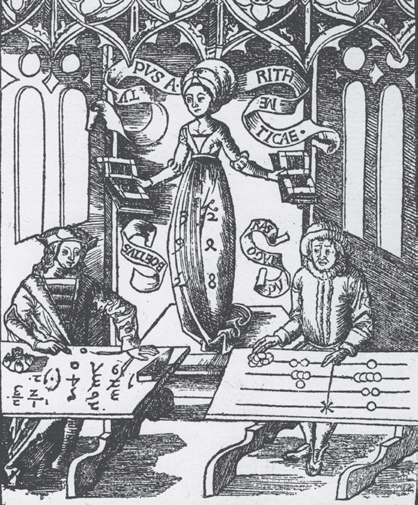
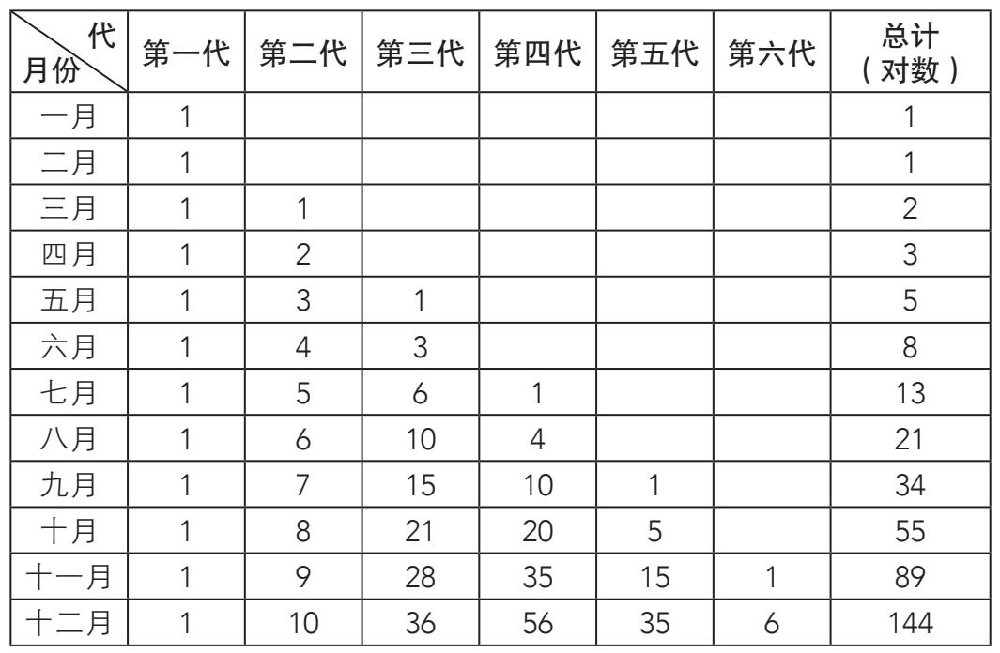
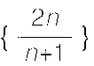
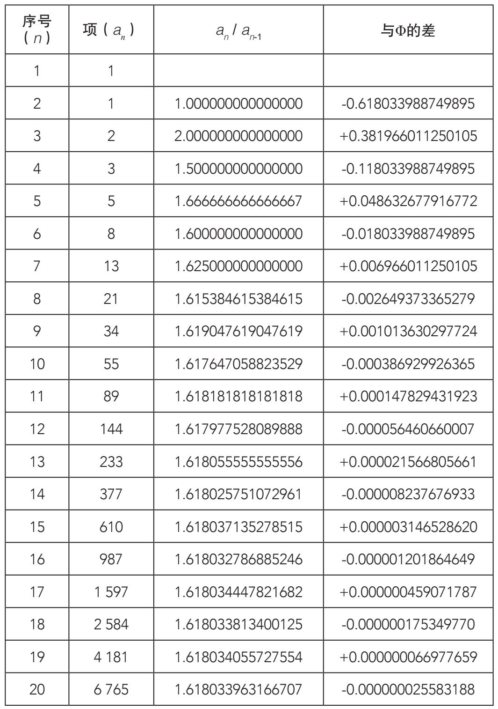
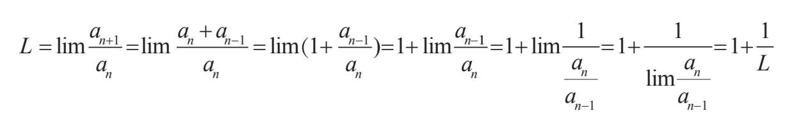

数学史总是充满了让人意想不到的事情，而黄金比例就是其中之一。人们自古以来就知道黄金比例，它深深地扎根于几何学。然而几个世纪后，有一个人仅用等差数列中的一连串分数求出了黄金比例。那个将黄金比例与几何、算术相结合，通过等差数列发现它的伟人就是中世纪最杰出的数学家列奥纳多·皮萨诺，人们通常称他为斐波那契。
斐波那契写过一些几何、代数以及数论方面的书，但他最有名的作品却与计算有关——《计算之书》（Liber Abaci）出版于1202年。作者也许是为了故意讽刺才起了这样一个具有欺骗性的书名。实际上，这本书证明了阿拉伯数字在计算上的优越性，并借此反对老式的计算方法。因为在当时的意大利，以算盘和古老的罗马数字为基础的计算占主导地位。在《计算之书》中，斐波那契摒弃了主流的计算方法。这不是一件容易的事情，尽管十进制计算更加容易，却没有得到迅速传播。这种方法不得不面对各种各样的抵制，打头阵的便是那些离不开算盘的人。然而，最后还是阿拉伯数字的支持者赢得了胜利。
列奥纳多·皮萨诺—斐波那契（约1170—约1250）
1170年左右，列奥纳多·皮萨诺出生于比萨。我们熟悉的“斐波那契”是他的外号，意为“波那契的儿子”。然而这个外号可能是现代人给他起的，没有证据表明他活着的时候就被人称为斐波那契。
斐波那契通过会计工作接触了数学（他的父亲是往来于各国的商人）。很快，他就展现出了对数学的兴趣，而这种数学早已超越了商业应用的范畴。前往北非的行商之旅给了他学习的机会，让他可以从穆斯林学者那里获得最新的数学知识，并且知道了从亚洲传过去的印度——阿拉伯数制。斐波那契很快意识到，这种数制与罗马数制相比有着巨大的优势。于是他便成了这个东方数制的坚定支持者，并开始在整个欧洲传播。所以，西方人应该感谢斐波那契，是他在西方文化中推动了这一重大变革。
列奥纳多·皮萨诺

《哲学珠玑》（Margarita Philosophica）中的一幅插图，描绘了算盘使用者（右）和阿拉伯数字支持者（左）之间的纷争。这本百科全书出版于1504年，作者为格雷戈尔·赖施。这幅插图表明，即使斐波那契已去世3个世纪，关于数制的争论依然激烈。
除了符号和计算方法的应用，《计算之书》还研究了数论（例如因数分解和整除规则）与初等代数的问题。当然还有一章专门讲了记账，讨论了利润和亏损分配以及货币兑换的规则。但是该书中最有名的当属“兔子问题”，解答这个问题正用到了今天的斐波那契数列。兔子问题如下：某人从一月开始养了一对兔子，这对兔子从三月开始每个月都产下一对小兔子，而兔子在出生两个月后具有繁殖能力，这样的话，一年后一共会有多少对兔子？
为了解决这个问题，曾是一名优秀商人的斐波那契做了一个表格。在这个表格中，他将兔子家族新增的成员分为六代，在“总计”一栏记录了每个月末兔子的总对数。大体浏览过这一栏后就会发现数字的排序方式非常奇怪，每个数都是前面的两数之和。

总计栏中的各项构成了我们所说的斐波那契数列，符合递归算法：
a1=1，a2=1；an=an-1+an-2（n≥2）
下面看一下斐波那契数列和黄金比例之间的关系。前文中已经列出过Φ的同底数连续幂的表达方式，我们在这里对其加以总结：
Φ3=2Φ+1
Φ4=3Φ+2
Φ5=5Φ+3
Φ6=8Φ+5
Φ7=13Φ+8
Φ8=21Φ+13
……
如果仔细观察它们的系数，同样会发现斐波那契数列中的连续项。我们可以利用上面这个数列（n为正整数）的通项公式把黄金比例和斐波那契数列结合到一起，其中an是斐波那契数列中第n项的值。
Φn=anΦ+an-1
数列的极限
当数列的连续项收敛于数字A时，我们说A是数列{an}的极限。经过大量的计算，所有项都越来越接近一个单独的数。
举例来说，数列的极限是0（随着n的增大，1/n无限接近于0），而

的极限为2。然而并不是所有的数列都有极限。现在我们再看一下斐波那契数列和黄金比例的其他关系。在斐波那契数列中，我们用计算器算出每一项与前一项之比，也就是an/an-1。前几个比值与Φ没有什么关系，但是继续算下去，你发现了什么？突然，an/an-1的比值开始接近Φ。在下表中我们可以看到，从第十项开始，两个连续项比值占Φ的差小于0.001。
这个表格说明，我们没有必要通过一连串的开方来得到Φ的小数近似值，只要把斐波那契数列中的相邻项相除就足够了。
对于黄金比例来说，以上所有证明都清楚地表达了一个规律，那就是在斐波那契数列中，相邻项之比的极限为Φ。
假设斐波那契数列中相邻项an+1/an的比值组成数列，该数列的极限为L（在此不做证明，只做假设）。这样我们可以将L表示为：


（请记住an+1=an+an-1）
L=1+
L2=L+1
L2−L−1=0
L=Φ
极限L的方程与Φ的相同，因此L和Φ的值相等。因此在斐波那契数列中，相邻项之比的极限就是黄金比例。
斐波那契数列的前两项都是1。如果我们把前两项换成其他两个相同数字，继续求出后面的项（每一项等于前两项之和），再用相邻项之比组成新的数列，那么该数列的极限始终是Φ。请注意，在上面的极限推导中，我们对其限定的条件是：
an+1=an+an-1